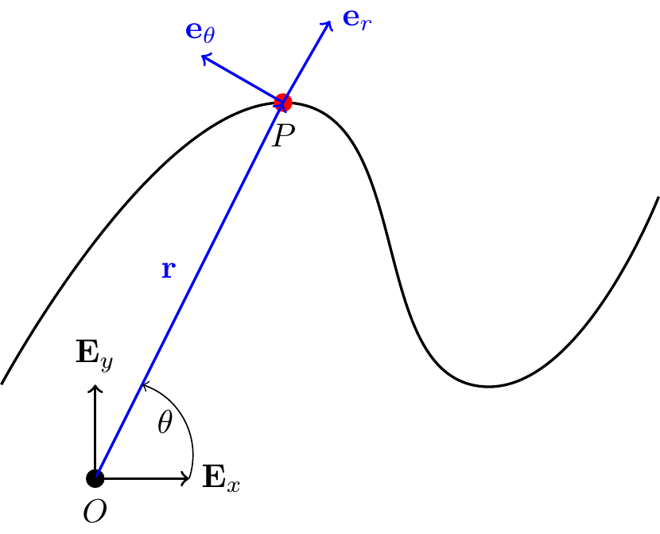
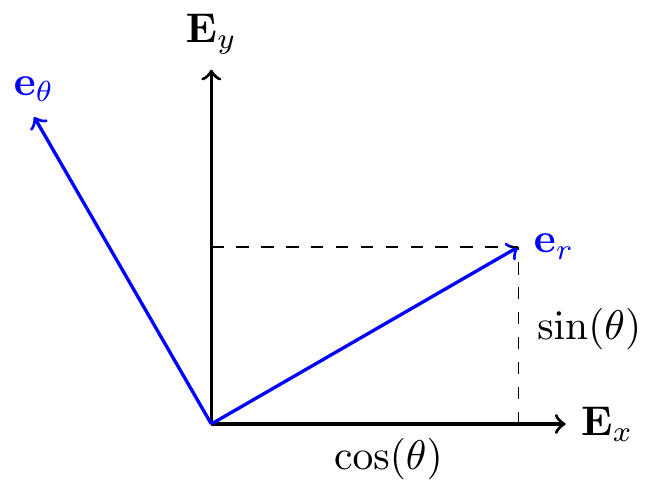
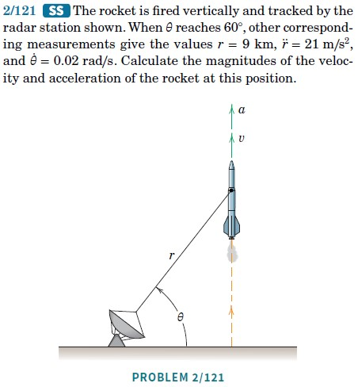
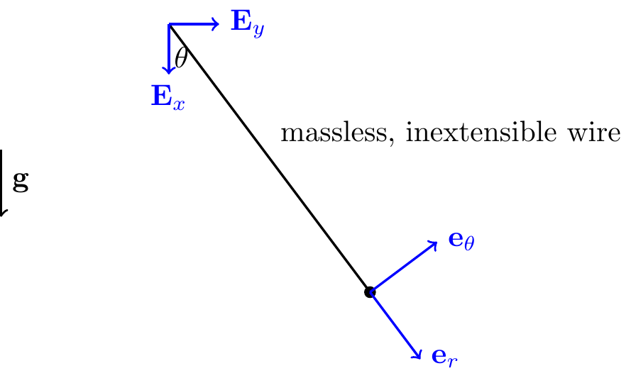
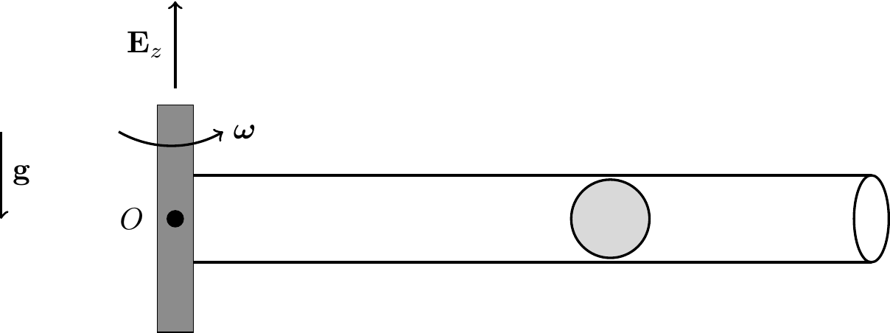
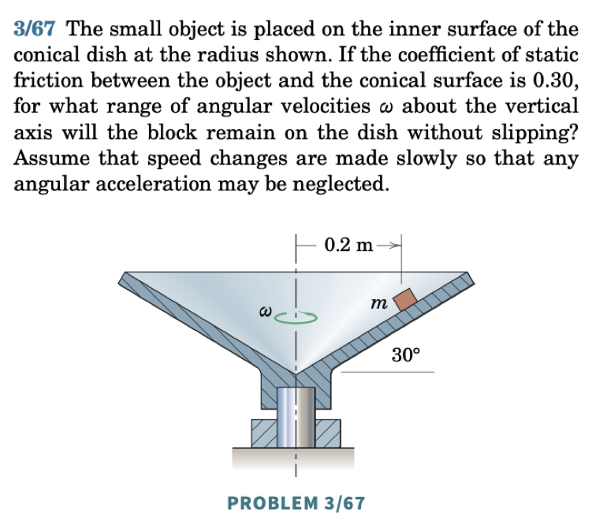
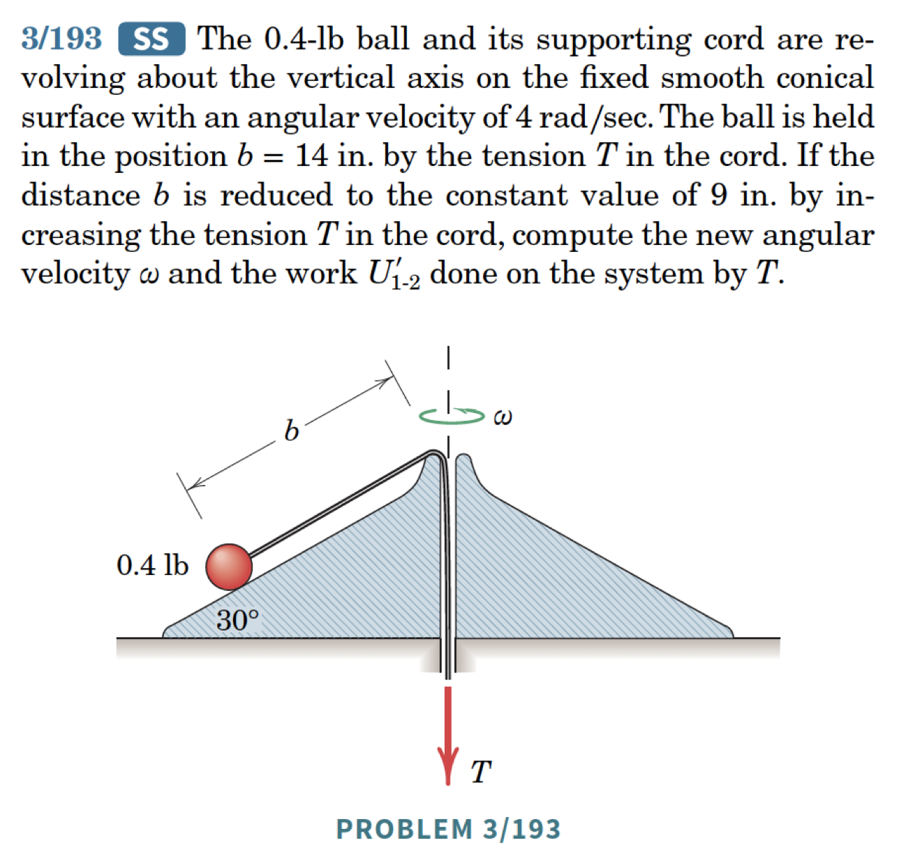

10 Cylindrical Polar Coordinate System
The cylindrical polar coordinate system is three-dimensional. We start by introducing the two-dimensional polar basis, then extend it to three dimensions.
10.1 Polar Coordinates
Consider \(\mathbb{E}^2\). Define: \[\begin{align} r = \sqrt{x^2+y^2}\geq 0, \qquad \theta = \tan^{-1}\lp\frac{y}{x}\rp. \end{align}\] So \(x = r\cos(\theta)\) and \(y = r\sin(\theta)\).
Define the basis \(\{{\bf e}_r,{\bf e}_\theta\}\) as a rotation of \(\{{\bf E}_x,{\bf E}_y\}\) by angle \(\theta\) (positive CCW about \({\bf E}_z\)):

TipThink!
Question: Express \({\bf e}_r\) and \({\bf e}_\theta\) in the Cartesian basis.
Answer: \[\begin{align} {\bf e}_r &= \cos(\theta){\bf E}_x+\sin(\theta){\bf E}_y,\\ {\bf e}_\theta &= -\sin(\theta){\bf E}_x+\cos(\theta){\bf E}_y. \end{align}\]
\(\{{\bf e}_r,{\bf e}_\theta\}\) is an orthonormal basis: \({\bf e}_r\cdot{\bf e}_r = 1\), \({\bf e}_\theta\cdot{\bf e}_\theta = 1\), \({\bf e}_r\cdot{\bf e}_\theta=0\).
- \({\bf e}_r\) points in the direction of increasing \(r\).
- \({\bf e}_\theta\) points in the direction of increasing \(\theta\).
TipThink!
Question: Calculate \(\dot{\bf e}_r\) and \(\dot{\bf e}_\theta\).
Answer: \[\begin{align} \dot{\bf e}_r = \dot{\theta}{\bf e}_\theta, \qquad \dot{\bf e}_\theta = -\dot{\theta}{\bf e}_r. \end{align}\]
The position vector is \({\bf r} = r{\bf e}_r\) (with \(r\geq 0\)).
TipThink!
Question: Calculate \({\bf v}\) and \({\bf a}\).
Answer: \[\begin{align*} {\bf v} &= \dot{r}{\bf e}_r+r\dot{\theta}{\bf e}_\theta,\\ {\bf a} &= \lp \ddot{r}-r\dot{\theta}^2\rp{\bf e}_r+\lp 2\dot{r}\dot{\theta}+r\ddot{\theta}\rp{\bf e}_\theta. \end{align*}\]
Note the components of acceleration:
- \(r\ddot{\theta}\): tangential
- \(\ddot{r}\): radial
- \(r\dot{\theta}^2\): centripetal
- \(2\dot{r}\dot{\theta}\): Coriolis
Remark: \(a_r \neq \dot{v}_r\). Be careful: \(v_r = \dot{r}\) so \(\dot{v}_r = \ddot{r}\), but \(a_r = \ddot{r} - r\dot{\theta}^2 \neq \dot{v}_r\) in general.
For rectilinear motions, Cartesian coordinates are usually easiest. For problems where \(r\) is directly measured (e.g. radar tracking), polar coordinates are natural.

10.1.1 Example: Nonlinear Pendulum
Consider a particle of mass \(m\) suspended from a rigid inextensible string of length \(\ell\). Find the equation of motion.

The constraint on the motion: \[\begin{align} r = \ell = \text{const.} \implies \dot{r}=0,\ \ddot{r} = 0. \end{align}\]
TipThink!
Question: How many degrees of freedom does this system have?
Answer: One. A particle in the plane has 2 DOFs, but the constraint \(r=\ell\) removes one. Knowing \(\theta(t)\) completely describes the motion.
Following the four steps:
- Choose polar coordinates: \[\begin{align*} {\bf r} &= \ell{\bf e}_r, \quad {\bf v} = \ell\dot{\theta}{\bf e}_\theta, \quad {\bf a} = \ell\ddot{\theta}{\bf e}_\theta-\ell\dot{\theta}^2{\bf e}_r. \end{align*}\]
NoteOrienting \({\bf e}_\theta\)
\({\bf e}_\theta\) points in the direction of increasing \(\theta\), determined by the right-hand rule: point the thumb along \({\bf E}_z\); your fingers curl in the direction of increasing \(\theta\).
- Forces: \[\begin{align*} {\bf T} &= T\lp-{\bf e}_r\rp, \quad {\bf W} = mg\lp\cos(\theta){\bf e}_r-\sin(\theta){\bf e}_\theta\rp. \end{align*}\]
NoteRemark: Tension
\({\bf T}\) is a constraint force keeping the particle on a circular path. If \(T>0\), the wire is in tension. The tension is the same throughout because the wire is massless.
- Balance of linear momentum: \[\begin{align*} mg{\bf E}_x-T{\bf e}_r &= m\ell\lp\ddot{\theta}{\bf e}_\theta-\dot{\theta}^2{\bf e}_r\rp. \end{align*}\] Projecting along \({\bf e}_\theta\) (hides unknown tension): \[\begin{align*} -mg\sin(\theta) &= m\ell\ddot{\theta} \implies \ddot{\theta}+\frac{g}{\ell}\sin(\theta) = 0. \end{align*}\] For small \(\theta\): \(\ddot{\theta}+\frac{g}{\ell}\theta = 0\) (simple harmonic motion).
Projecting along \({\bf e}_r\) gives the tension: \(T = m\lp\ell\dot{\theta}^2+g\cos(\theta)\rp\).
10.2 Types of Accelerations Explained
Recall: \[\begin{align*} {\bf a} = \lp\ddot{r}-r\dot{\theta}^2\rp{\bf e}_r+\lp2\dot{r}\dot{\theta}+r\ddot{\theta}\rp{\bf e}_\theta. \end{align*}\]
- Radial \(\ddot{r}\): particle on a spring in rectilinear motion.
- Centripetal \(-r\dot{\theta}^2\): particle on a circle at constant speed — the normal force steers the particle.
- Coriolis \(2\dot{r}\dot{\theta}\): particle in a tube rotating at constant angular velocity.
- Tangential \(r\ddot{\theta}\): particle pushed along a circle.
10.2.1 Example: Particle in a Rotating Tube
\(\dot{\theta} = \omega = \text{const.}\), \(\ddot{\theta} = 0\).

Kinematics: \[\begin{align*} {\bf r} = r{\bf e}_r, \quad {\bf v} = \dot{r}{\bf e}_r+r\omega{\bf e}_\theta, \quad {\bf a} = \lp\ddot{r}-r\omega^2\rp{\bf e}_r+2\dot{r}\omega{\bf e}_\theta. \end{align*}\]
Assume no friction: \({\bf N} = N{\bf e}_\theta\).
Applying BoLM and projecting: \[\begin{align*} \lp{\bf F} = \dot{\bf G}\rp\cdot{\bf e}_r &\implies \ddot{r}-\omega^2 r = 0 \quad (\text{EOM for } r(t)),\\ \lp{\bf F} = \dot{\bf G}\rp\cdot{\bf e}_\theta &\implies N = 2m\dot{r}\omega \quad (\text{Coriolis reaction}). \end{align*}\]
NoteCoriolis acceleration
As the particle moves outward, \(r\omega\) increases. The tube must supply the \({\bf e}_\theta\) acceleration \(2\dot{r}\omega\) so the particle stays inside.
10.2.2 Example: Particle Pushed in a Circle
\({\bf P} = P{\bf e}_\theta\), \(r = R = \text{const.}\): \[\begin{align*} \lp{\bf F}=\dot{G}\rp\cdot{\bf e}_\theta &\implies P=mR\ddot{\theta} \quad (\text{EOM for }\theta),\\ \lp{\bf F}=\dot{G}\rp\cdot{\bf e}_r &\implies N_r=mR\dot{\theta}^2 \quad (\text{centripetal}),\\ \lp{\bf F}=\dot{G}\rp\cdot{\bf E}_z &\implies N_z=mg \quad (\text{vertical equilibrium}). \end{align*}\]
10.3 Cylindrical-Polar Coordinates
In \(\mathbb{E}^3\), the polar system extends by adding \(z\): \[\begin{align*} \begin{bmatrix}{\bf e}_r\\ {\bf e}_\theta\\ {\bf E}_z\end{bmatrix} = \begin{bmatrix}\cos(\theta) & \sin(\theta) & 0\\ -\sin(\theta) & \cos(\theta) & 0\\ 0 & 0 & 1\end{bmatrix} \begin{bmatrix}{\bf E}_x\\ {\bf E}_y\\ {\bf E}_z\end{bmatrix}. \end{align*}\]
Position, velocity, acceleration: \[\begin{align*} {\bf r} &= r{\bf e}_r+z{\bf E}_z,\\ {\bf v} &= \dot{r}{\bf e}_r+r\dot{\theta}{\bf e}_\theta+\dot{z}{\bf E}_z,\\ {\bf a} &= \lp\ddot{r}-r\dot{\theta}^2\rp{\bf e}_r+\lp2\dot{r}\dot{\theta}+r\ddot{\theta}\rp{\bf e}_\theta+\ddot{z}{\bf E}_z. \end{align*}\]
10.3.1 Example: Particle on a Cone
See animation for 03/067 here.

